ar = 0.5, ma = 0.5 (ส่วน Extra ของ R_codes)Slide 7 — ARIMA and Exponential Smoothing และใบงาน ARMA_properties
Lesson 5–6 ให้ตัวละครครบแล้ว คือ AR, MA, ARMA และ ARIMA บทนี้เอาตัวละครเหล่านั้นไปใช้กับข้อมูลจริงหนึ่งชุด ตั้งแต่ดูกราฟจนได้ค่าพารามิเตอร์ ผังข้างล่างคือขั้นตอนทั้งหมดของ Box-Jenkins กล่องขอบส้มคือขั้นที่บทนี้สอน ส่วนกล่องอื่นชี้ว่าเรียนที่บทไหน
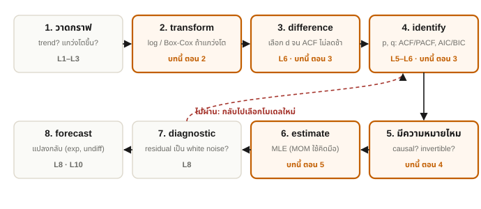
ทุกขั้นส่งผลถึงขั้นถัดไป เช่น log ในขั้น 2 ต้องแปลงกลับในขั้น 8 และเส้นประแดงคือ residual ไม่ผ่านใน Lesson 8 ต้องย้อนมาเลือกโมเดลใหม่
| ตอน | คำถามที่ตอบ | เครื่องมือหลัก |
|---|---|---|
| 1 | ARIMA กับ exponential smoothing เกี่ยวกันอย่างไร | simulation, ARIMA(0,1,1) = SES ที่ α = 1 + θ |
| 2 | ความแกว่งโตตามเวลา แก้อย่างไร | log, Box-Cox (log ก่อน difference) |
| 3 | เลือก d, p, q อย่างไร | ACF/PACF, ADF, AIC, BIC |
| 4 | โมเดลที่เขียนได้ ใช้ได้ทุกตัวไหม | redundancy, causal, invertible, รากของพหุนาม |
| 5 | หาค่า φ, θ, σ² อย่างไร และอ่าน output อย่างไร | method of moments (Yule-Walker), MLE |
สีในสมการ: \(\shk{w_t}\) สีฟ้าคือ shock ที่มองไม่เห็น · \(\prm{\phi},\prm{\theta}\) สีส้มคือพารามิเตอร์ที่ต้องประมาณ
ใบงาน ARMA_properties ที่แจกใน Class 6 เปิดด้วยหน้าทบทวนที่เว้นช่องให้เติมเอง คำตอบมาจาก Lesson 5 ตอน 4.3 และ Lesson 6 ตอน 3.4 ซึ่งรวมเป็นตารางเดียวได้ดังนี้
| AR(1) \(X_t=\prm{\phi_1}X_{t-1}+\shk{w_t}\) | สูตร | φ₁ = 0.6 |
|---|---|---|
| autocovariance | \(\gamma(h)=\phi_1^h\gamma(0)\) โดย \(\gamma(0)=\sigma^2/(1-\phi_1^2)\) | |
| ACF | \(\rho(h)=\phi_1^h\) ค่อย ๆ ลด (tail off) | 0.6, 0.36, 0.216 |
| PACF | \(\phi_{11}=\phi_1\) และ \(\phi_{hh}=0\) เมื่อ h ≥ 2 (ตัด) | 0.6, 0, 0 |
กฎจำของสามโมเดล: AR(p) PACF ตัดหลัง lag p, MA(q) ACF ตัดหลัง lag q, ARMA(p,q) ค่อย ๆ ลดทั้งคู่ ตัวที่ตัดคือตัวที่บอกอันดับ sample PACF ใช้ pacf() และเส้นประ \(\pm2/\sqrt n\) เหมือน ACF
simulation คือการสร้างข้อมูลจากโมเดลที่เรารู้คำตอบอยู่แล้ว เหมือนทำข้อสอบที่มีเฉลย ดูว่าโมเดลแต่ละแบบทิ้งรอยอะไรไว้ใน ACF แล้วค่อยใช้รอยนั้นตามหาโมเดลของข้อมูลจริง12
วิธีอ่านกราฟก่อนและหลัง difference อยู่ใน Lesson 6 ตอน 4.5 ที่นี่รันโค้ดของคาบเรียนเองด้วย set.seed(7) เพื่อดูตัวเลขจริง และเพิ่มกรณีที่สามซึ่งอ่านยาก
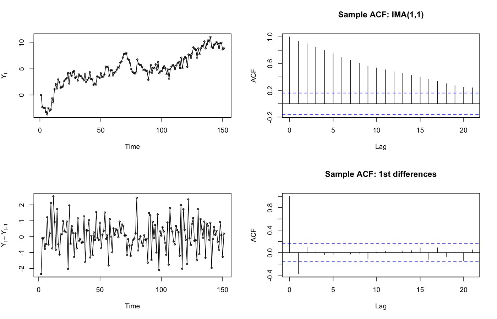
arima.sim(list(order=c(0,1,1), ma=c(-0.5)), n=150)ACF ของ IMA(1,1) ลดช้ากว่า AR(p) เสียอีก3 หลัง difference ค่า lag 1 = −0.376 ใกล้ค่าทฤษฎีของ MA(1) คือ \(-0.5/1.25=-0.4\) (สูตร ρ₁ จาก Lesson 5) แต่เมื่อฟิต arima(ima11, order=c(0,1,1)) ได้ θ̂ = −0.360 ห่างจากค่าจริง −0.5 ราวสองเท่าของ s.e. 0.072 ข้อมูล 150 ค่าจึงยังให้ค่าประมาณคลาดได้
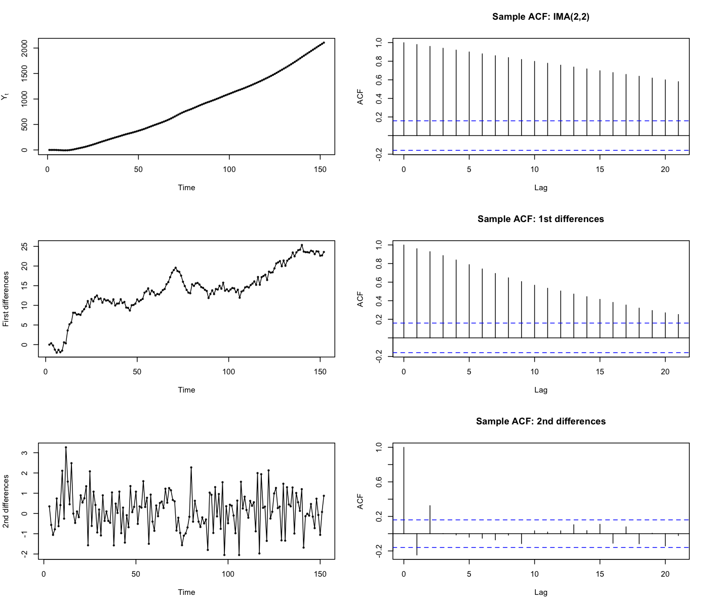
ma = c(-0.3, 0.3)IMA(2,2) มี trend แรงกว่า4 difference ครั้งแรกแล้ว ACF ยังลดช้า ต้องทำครั้งที่สอง (d = 2) จึงเหลือ MA(2) ที่ทะลุแค่ lag 1 และ 2 ตัวเลขไม่ตรงทฤษฎีเป๊ะ เพราะ simulation "อาจไม่ perfect รันใหม่อาจชัดกว่า"
ar = 0.5, ma = 0.5 (ส่วน Extra ของ R_codes)ARIMA(1,1,1) หลัง difference เหลือ ARMA(1,1) ซึ่ง ACF ลดทีละครึ่งตาม φ = 0.5 และ PACF ก็ไม่ตัดชัด นี่คือกรณีที่ส่วน AR กับ MA "mix กัน" จนกราฟตอบไม่ได้ จึงต้องมี AIC/BIC ในตอน 3 และ EACF ในตอน 4.6
ARIMA(0,1,2) หรือ IMA(1,2): d = 1 เพราะ difference ครั้งเดียวก็หายลดช้า และ ACF ที่ตัดหลัง lag 2 บอกว่าส่วนที่เหลือคือ MA(2)
Box-Jenkins กับ exponential smoothing เป็นคนละโมเดลที่มาจากแนวคิดต่างกัน และ MA ของ smoothing ไม่ใช่ MA ของ Box-Jenkins แต่บางค่าของ p, d, q สองฝั่งเทียบกันได้5 เราเห็นความเท่ากันกับ exponential smoothing:
ถ้ารู้ θ ของ ARIMA(0,1,1) ก็รู้ α ของ SES ทันที และกลับกัน ข้อสอบเก่าเคยให้โมเดล ARIMA(0,1,1) แล้วให้หา α6
กุญแจของการพิสูจน์คือมอง \(w_{t+1}\) เป็นความคลาดเคลื่อนของการพยากรณ์ เหมือน residual \(e_t=Y_t-\hat Y_t\) ใน regression7 จึงแทน shock ที่มองไม่เห็นด้วยค่าที่คำนวณได้
\(X_t-X_{t-1}=w_t+\theta w_{t-1}\) จึงได้ \(X_{t+1}=X_t+w_{t+1}+\theta w_t\)
\(w_{t+1}=X_{t+1}-\hat X_{t+1}\)
\(X_{t+1}=X_t+X_{t+1}-\hat X_{t+1}+\theta w_t\) ตัด \(X_{t+1}\) ทั้งสองข้าง ได้ \(\hat X_{t+1}=X_t+\theta w_t\)
\(\hat X_{t+1}=X_t+\theta(X_t-\hat X_t)=(1+\theta)X_t-\theta\hat X_t\)
จะได้ \(-\theta=1-\alpha\) และ \(\hat X_{t+1}=\alpha X_t+(1-\alpha)\hat X_t\) ซึ่งคือ \(F_{t+1}=\alpha X_t+(1-\alpha)F_t\) ของ Lesson 4 ตอน 2 "ถ้าจำไม่ได้ไปเปิดสไลด์ต้น ๆ"
"Optimal Exponential Smoothing in R" คือฟิต ARIMA(0,1,1) แล้วแปลง θ เป็น α8 IMA(1,1) ข้างบนได้ θ̂ = −0.3602 จึงคาดว่า α = 0.6398 และ ets(ima11, model="ANN") ได้ 0.6376 ต่างเล็กน้อยเพราะสองคำสั่ง optimize ต่างกัน
Holt (double exponential smoothing) มีสองน้ำหนักสำหรับ level และ trend จึงเทียบได้กับ ARIMA(0,2,2) ที่ไม่มีค่าคงที่ โดยไม่ลงรายละเอียดการพิสูจน์9 เพราะ Holt มีความชันที่เปลี่ยนได้ จึงต้อง difference สองครั้ง และ MA(2) ที่เหลือคือสองน้ำหนัก α กับ β สูตรแปลงอยู่ใน Lesson 10 ตอน 3
สูตร α = 1 + θ ใช้กับ convention บวกของสไลด์ \(w_t+\theta w_{t-1}\) ถ้าโจทย์เขียน \(w_t-\theta w_{t-1}\) จะได้ α = 1 − θ อีกข้อคือ ถึงสองโมเดลให้ค่าพยากรณ์เท่ากัน ก็ห้ามเอา AIC ของ ets() ไปเทียบกับ AIC ของ arima() เพราะ likelihood คำนวณคนละแบบ (Lesson 10)
α = 1 + (−0.75) = 0.25 น้ำหนักของค่าล่าสุดต่ำ ค่าพยากรณ์จึงปรับตามข้อมูลใหม่ช้า และเรียบมาก


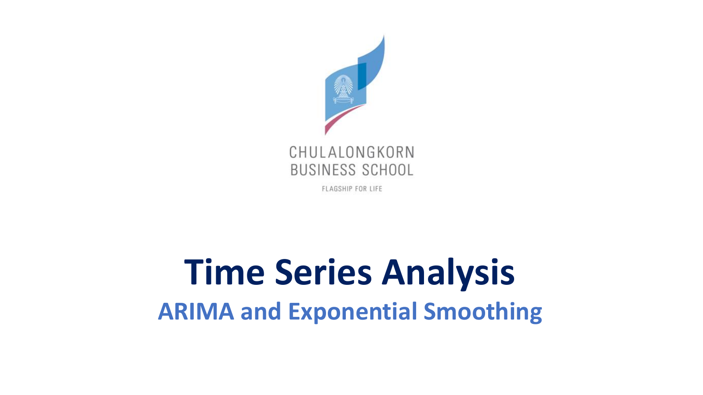

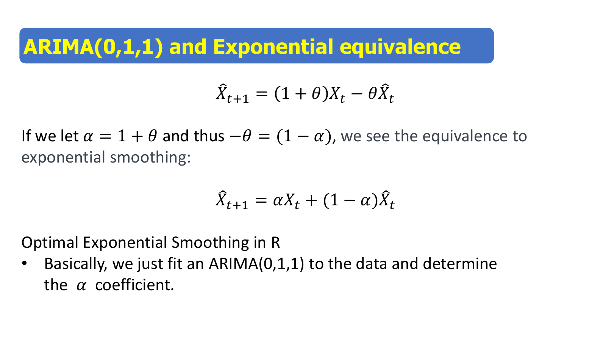
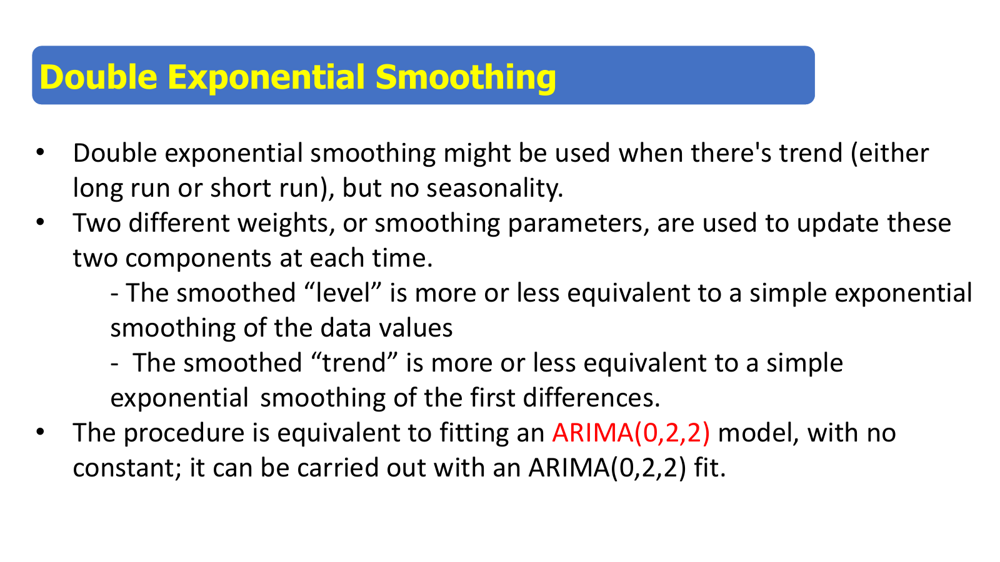
ร้านที่ขายวันละ 100 ชิ้นแกว่งวันละ 10 ชิ้น พอโตเป็นวันละ 1,000 ชิ้นก็แกว่งวันละ 100 ชิ้น ความแกว่งโตตามขนาดร้าน
อนุกรมไม่นิ่งได้จากสองสาเหตุ และแต่ละสาเหตุมีวิธีแก้ของตัวเอง10 transformation เป็นหัวข้อที่สำคัญมาก หลักคือทำให้นิ่งก่อนแล้วจึงศึกษาเชิงลึก ไม่ว่าจะใช้โมเดลไหน11
| สาเหตุ | เห็นจากอะไร | แก้ด้วย | ผิดเงื่อนไขนิ่งข้อไหน (Lesson 2) |
|---|---|---|---|
| trend | ACF ลดช้ามาก | difference (ตอน 3) | mean ไม่คงที่ |
| ความแกว่งไม่คงที่ | ช่วงหลังแกว่งกว้างกว่าช่วงแรก | transformation เช่น log | variance ไม่คงที่ |
ความแกว่งที่ไม่คงที่คือ heteroscedasticity แบบใน regression และเป็นสัญญาณของ lack of fit ด้วย เพราะช่วงที่แกว่งมากคือช่วงที่โมเดลพยากรณ์ไม่ดี12
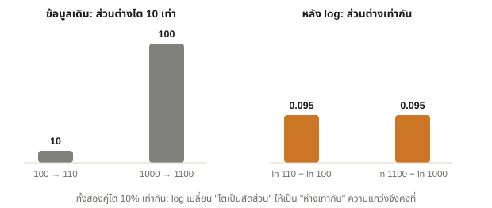
log วัดการเปลี่ยนแปลงเป็นสัดส่วน ทั้งสองคู่โต 10% เท่ากัน หลัง log ส่วนต่างจึงเท่ากันที่ ln 1.1 = 0.095
หลัง log ต้องสร้างโมเดลกับ log X_t ไม่ใช่ X_t13 และค่าพยากรณ์ที่ได้อยู่ในหน่วย log ต้องแปลงกลับด้วย exponential ก่อนรายงาน
Box-Cox (1964) รวม power transformation ไว้ในสูตรเดียว ค่า λ เป็นปุ่มหมุนตัวเดียวที่เลือกว่าจะบีบข้อมูลแรงแค่ไหน
| λ | ได้อะไร | ใช้เมื่อไร |
|---|---|---|
| 1 | x − 1 แทบไม่เปลี่ยนรูป | ไม่ต้องแปลง |
| 1/2 | √x (หลังเลื่อนและย่อขนาด) | บีบเล็กน้อย |
| 0 | ln x ไม่ใช่ x⁰ | ความแกว่งโตเป็นสัดส่วนกับระดับ |
| 1/10, 1/6 | \(x^{1/10}\), \(x^{1/6}\) | เลี่ยงถ้าทำได้ "แปลงกลับยากและความหมายแปลยาก" |
ทำไม λ = 0 เป็น ln x14 เมื่อ λ → 0 สูตร \((x^\lambda-1)/\lambda\) เข้าใกล้ ln x เช่น x = 10 และ λ = 0.001 ได้ \((10^{0.001}-1)/0.001=2.3052\) ใกล้ \(\ln10=2.3026\)
log ดีกว่า √ เพราะแปลงกลับด้วย exponential ง่าย และค่าที่แปลงกลับไม่ติดลบ เหมาะกับยอดขาย15 BoxCox.ar() จาก package TSA หาค่า λ ที่ทำให้ likelihood สูงสุดพร้อมช่วงเชื่อมั่น 95% กฎคือถ้าช่วงคลุม 0 ให้ใช้ log ถ้าไม่คลุม 0 ต้องใช้ transformation รูปแบบอื่น16 คำสั่งนี้รันนานเพราะต้องประมาณ MLE ซ้ำหลายครั้ง17
ช่วงไม่คลุม 0 จึงไม่ใช้ log ช่วงคลุม 0.5 จึงใช้ √x ซึ่งยังแปลงกลับง่าย (ยกกำลังสอง) และช่วงไม่คลุม 1 จึงต้องแปลง
ตัวอย่างนี้มีไว้ให้เห็นว่า log แก้ได้แค่ความแกว่ง แต่ trend และฤดูกาลยังอยู่ ต้องแก้ต่อด้วย difference และ SARIMA ตามลำดับ
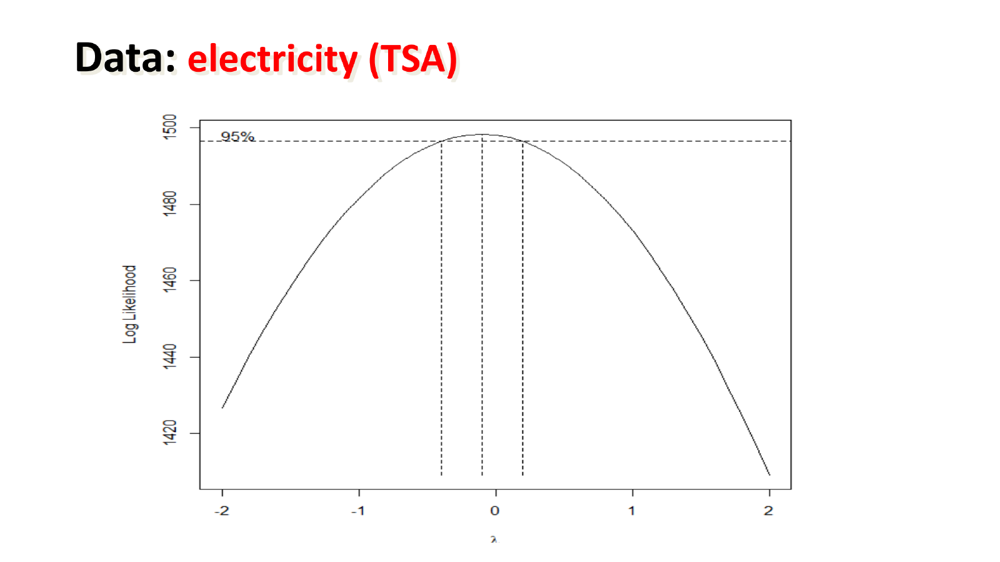
electricity ใน TSA คือการใช้ไฟฟ้ารายเดือนของสหรัฐฯ มีทั้ง trend และฤดูกาล18 และช่วงท้ายแกว่งกว้างกว่าช่วงแรกเกินสองเท่า กราฟ log-likelihood สูงสุดที่ λ = −0.1 และช่วงเชื่อมั่นคือ −0.4 ถึง 0.2 ช่วงนี้คลุม 0 จึงใช้ log19 ส่วน λ = 1 (ไม่แปลง) อยู่นอกช่วงไกลมาก ยืนยันว่าต้องแปลง
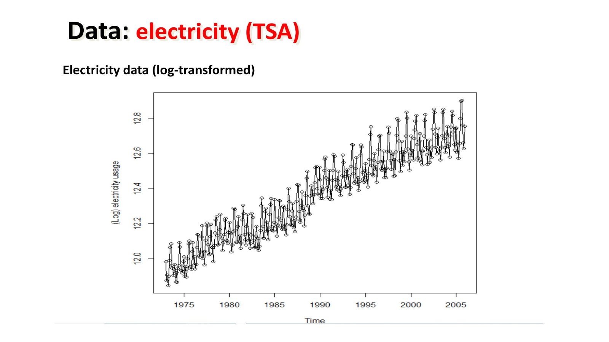
หลัง log ความกว้างของการแกว่งตามฤดูกาลใกล้เคียงกันตลอดช่วง ปัญหา variance หายไป แต่ trend ขาขึ้นยังอยู่ ขั้นถัดไปจึงเป็น difference20

ACF ของ \(\nabla\log X_t\) ไม่ลดช้าแล้ว แต่มียอดที่ 1.0, 2.0, 3.0 บนแกนนอน ซึ่งในข้อมูลรายเดือนคือ lag 12, 24, 36 สูงกว่า 0.8 ทุกยอด แปลว่าเดือนเดียวกันของแต่ละปียังสัมพันธ์กันมาก เพราะหน้าร้อนคนเปิดแอร์ใช้ไฟมาก21 ARIMA ธรรมดาจัดการแบบแผนนี้ไม่ได้ ต้องใช้ SARIMA ใน Lesson 9 การบ้านคือทำ ACF ของ X_t เดิมแล้วเทียบกับของ diff log22
คำถามที่ถามในห้องคือ log ก่อนหรือ difference ก่อน คำตอบคือ log ก่อน แล้วค่อย difference23 ตอนพยากรณ์ต้องแปลงกลับด้วย exponential24 เหตุผลเทียบได้ดังนี้
| log ก่อน แล้ว difference | difference ก่อน แล้ว log | |
|---|---|---|
| ทำได้ไหม | ได้เสมอเมื่อข้อมูลเป็นบวก | ผลต่างติดลบได้ ซึ่ง log ไม่ได้ |
| แปลความ | \(\ln X_t-\ln X_{t-1}=\ln(X_t/X_{t-1})\) ≈ อัตราการเติบโต | ไม่มีความหมายชัด |
การแปลงข้อมูลในขั้นนี้ส่งผลไปถึงขั้นอื่นของผังต้นบท ตารางนี้รวมจุดที่ต้องจำไว้
| ทำอะไรกับข้อมูล | ผลที่ตามมา | เรียนที่ |
|---|---|---|
| log | โมเดลและค่าพยากรณ์อยู่ในหน่วย log ต้อง exp กลับก่อนวัด accuracy | Lesson 8 |
| log | AIC ของโมเดลบน log X เทียบกับ AIC ของโมเดลบน X ไม่ได้ เพราะ likelihood คำนวณจากข้อมูลคนละชุด | ตอน 3.3 |
| difference (d) | ค่าพยากรณ์ของอนุกรมที่ diff แล้วต้อง undifference ถ้าใช้ arima(x, order=c(p,1,q)) R ทำให้เอง | Lesson 8 |
| difference มากเกินไป | เกิด MA เทียมที่ θ = −1 ซึ่ง invertible ไม่ได้ | ตอน 3.1 และ 4.3 |
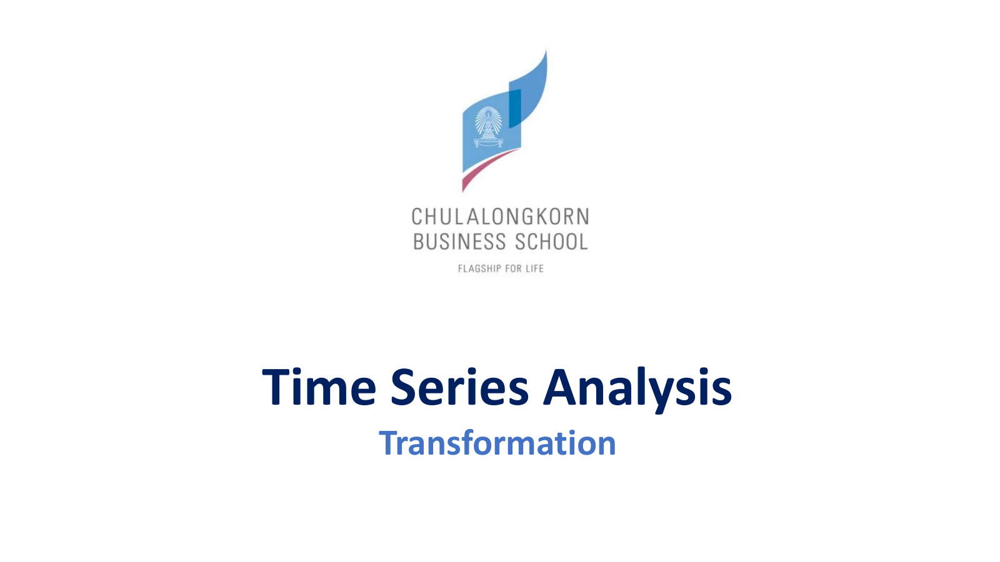

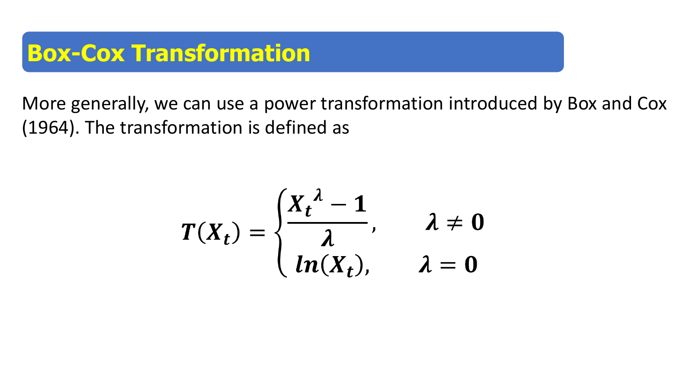
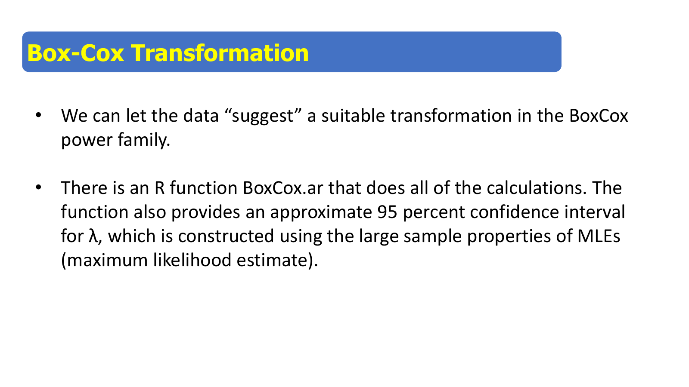

identification คือการหาค่า p และ q ที่เป็นไปได้25 ไม่ใช่คำตอบเดียว เครื่องมือมีสองกลุ่ม คือกราฟ (ACF, PACF, EACF) กับตัวเลข (AIC, BIC) แต่ก่อนหา p, q ต้องได้ d ก่อน เพราะ ACF ของอนุกรมที่ยังไม่นิ่งอ่านอันดับไม่ได้ ในคลิปพูดสลับ ACF กับ PACF แล้วแก้เอง26 วิธีจำคือตัวที่ตัดบอกอันดับ
อนุกรมที่ไม่นิ่ง "hang together" คือค่าที่ติดกันใกล้กันตลอด เหมือนคนเดินช้า ๆ ที่ตำแหน่งวินาทีนี้แทบเท่ากับวินาทีก่อน ACF จึงสูงไปหลาย lag
| เห็นอะไร | ทำอะไร |
|---|---|
| มี trend และ ACF ลดช้ามาก | difference ครั้งแรก |
| ACF ของผลต่างลดเร็ว | d = 1 แล้วหา p, q จากผลต่างนั้น |
| ผลต่างครั้งแรกยังลดช้า (เช่น IMA(2,2)) | difference อีกครั้ง d = 2 แทบไม่ต้องใช้ d > 2 |
| ความแกว่งโตตามระดับด้วย | transform "up front" ก่อน difference (ตอน 2)27 |
อย่า difference มากเกินไป28 ถ้า difference white noise ที่นิ่งอยู่แล้ว จะได้ \(w_t-w_{t-1}\) ซึ่งคือ MA(1) ที่ θ = −1 มี ρ₁ = −0.5 เป็นโครงสร้างเทียมที่ข้อมูลเดิมไม่มี จุดนี้เชื่อมกับสองบท: ρ₁ = −0.5 คือขอบล่างสุดที่ MA(1) ทำได้ (Lesson 5 ตอน 3.4) และราก θ(x) = 1 − x อยู่บนวงกลมพอดีจึงไม่ invertible (ตอน 4.3) ถ้าเห็น lag 1 ติดลบใกล้ −0.5 หลัง difference ให้สงสัยว่า difference เกิน
ADF test ใช้ตรวจความนิ่งแทนการดูด้วยตา สิ่งที่ห้ามลืมคือ H1 คือนิ่ง และ H0 คือไม่นิ่ง29 วิชานี้มี test หลายตัวที่ H0 กลับด้านกัน ตารางนี้รวมไว้ที่เดียว
| test | H0 | อยากได้ p-value | เรียนที่ |
|---|---|---|---|
| ADF | ไม่นิ่ง | น้อย (จะได้ปฏิเสธ แล้วสรุปว่านิ่ง) | Lesson 3, บทนี้ |
| Ljung-Box | residual เป็น random (โมเดลเหมาะสม) | มาก | Lesson 8 |
| Shapiro-Wilk | residual เป็น normal | มาก | Lesson 8 |
| Granger causality | X ไม่ได้เป็นเหตุของ Y | น้อย (ถ้าจะใช้ X ช่วยพยากรณ์) | Lesson 11 |
times.txt ได้ Dickey-Fuller = −7.1518 และ p-value = 0.01 ซึ่งน้อยกว่า 0.05 จึงปฏิเสธ H0 สรุปว่านิ่ง ใช้ d = 0 R เตือนว่า "p-value smaller than printed p-value" คือค่าจริงต่ำกว่า 0.01 อีก
สไลด์เขียนว่า adf.test อยู่ใน library TSA แต่คำสั่งนี้มาจาก package tseries (ใช้ใน Lesson 3) และ Lag order = 5 มาจากค่าเริ่มต้น \(\lfloor(n-1)^{1/3}\rfloor=\lfloor149^{1/3}\rfloor=5\)
ให้คะแนนโมเดลเหมือนตัดเกรดรายงาน ส่วนแรกคือเนื้อหาตรงข้อมูลแค่ไหน ส่วนที่สองคือหักคะแนนที่เขียนยาวเกินจำเป็น โมเดลที่ใส่พารามิเตอร์เพิ่มจะฟิตดีขึ้นเสมอ AIC จึงต้องมีค่าปรับไว้ถ่วง
ยิ่งน้อยยิ่งดี30 เพราะ −2 ln L น้อยแปลว่า likelihood สูง ส่วน 2k คือค่าปรับที่ไม่ให้โมเดลซับซ้อนเกินจำเป็น ตามหลัก parsimony "ให้มันเท่าที่จำเป็น"
| L | likelihood สูงสุดจาก MLE (ตอน 5.5) คือโอกาสที่โมเดลนี้จะเกิด take log เพื่อบีบค่าแต่ทิศทางเหมือนเดิม31 |
| k | จำนวนพารามิเตอร์ที่ประมาณ R นับ φ, θ, intercept และ σ² ทั้งหมด |
ARMA(1,1) ของ times: log likelihood = −247.66 และ k = 4 (φ, θ, intercept, σ²) จึงได้ AIC = 495.32 + 8 = 503.32 ตรงกับ aic = 503.31 ที่ R รายงาน สูตรนี้ย้อนกลับได้ด้วย ถ้ารู้ AIC และ k ก็หา \(\ln L=(2k-\mathrm{AIC})/2=(8-503.31)/2=-247.66\)
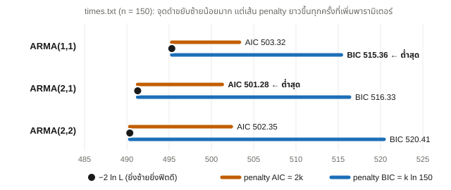
จุดดำคือ −2 ln L เส้นส้มคือค่าปรับของ AIC ARMA(2,1) ไป ARMA(2,2) ความฟิตดีขึ้นแค่ 0.93 แต่ค่าปรับเพิ่ม 2 AIC จึงสูงขึ้นจาก 501.28 เป็น 502.35 การเพิ่มพารามิเตอร์ตัวนี้ไม่คุ้ม
เรื่อง k สไลด์เขียนว่าไม่นับ white noise variance แต่ R นับ σ² ด้วย32 การนับต่างกันไม่เปลี่ยนการเลือกโมเดล เพราะทุกโมเดลถูกบวกค่าคงที่เท่ากัน AIC เทียบกันได้เฉพาะโมเดลที่ใช้ข้อมูลชุดเดียวกัน ข้อมูลที่ log หรือ difference ต่างกัน (d ต่างกัน) คือข้อมูลคนละชุด ซอฟต์แวร์บางตัวอย่าง SAS ใช้ +2 log L ทำให้ยิ่งมากยิ่งดี แต่ใน R ยิ่งน้อยยิ่งดี33
k = 5 (φ₁, φ₂, θ₁, intercept, σ²) จึงได้ \(\ln L=(2\cdot5-300)/2=-145\)
ความฟิตส่วนเดียวกับ AIC เปลี่ยนแค่ค่าปรับต่อพารามิเตอร์จาก 2 เป็น ln n เมื่อ n ≥ 8 ln n เกิน 2 BIC จึงลงโทษโมเดลใหญ่หนักกว่า และมักเลือกโมเดลที่เล็กกว่า
| AIC | BIC | |
|---|---|---|
| ค่าปรับต่อพารามิเตอร์ | 2 | ln n (n = 150 ได้ 5.01 หนักกว่าราว 2.5 เท่า) |
| times เลือก | ARMA(2,1) | ARMA(1,1) |
| ใน R | AIC(fit) | AIC(fit, k = log(n)) หรือ BIC(fit) |
AIC กับ BIC แปลงหากันได้เมื่อรู้ k และ n: \(\mathrm{BIC}=\mathrm{AIC}-2k+k\ln n\) ARMA(1,1) ของ times ได้ 503.31 − 8 + 4(5.0106) = 515.35 ตรงกับตาราง BIC ของสไลด์ (515.3553) ในภาพข้างบน เส้นฟ้าคือค่าปรับของ BIC ซึ่งยาวกว่าเส้นส้มมาก BIC จึงไม่ยอมจ่ายพารามิเตอร์เพิ่ม และเลือก ARMA(1,1)
AIC กับ BIC บอกได้แค่ว่าโมเดลไหน "สมดุลกว่า" ในกลุ่มที่เทียบ ไม่ได้บอกว่าโมเดลถูกต้อง ทุก candidate ยังต้องผ่าน diagnostic ใน Lesson 8 และ AICc ซึ่งปรับ AIC สำหรับข้อมูลน้อยจะมาใน Lesson 10
ตัวอย่างนี้มีไว้ให้เห็นว่า ข้อมูลจริงให้กราฟที่ไม่ชัด จึงต้องเก็บโมเดลไว้ในใจ 2–3 ตัวแล้วให้ AIC/BIC ช่วยตัดสิน

times.txt นิ่งตาม ADF จึงใช้ d = 0 sample ACF ทะลุเส้นที่ lag 1, 2 (lag 1 = −0.771) ชวนให้คิดว่าเป็น MA(2) แต่ PACF ก็ทะลุที่ lag 1, 2 ชวนให้คิดว่าเป็น AR(2) จึงตั้งไว้ว่า p และ q เป็น 1 หรือ 2 แล้วมีโมเดลอยู่ในใจ 2–3 ตัว34 จากนั้นฟิตทุกคู่ (p, q) ตั้งแต่ 0 ถึง 3 แล้วเก็บ AIC ลงตาราง โดยแถวคือ p และคอลัมน์คือ q ช่อง [1,1] คือ ARMA(0,0)35
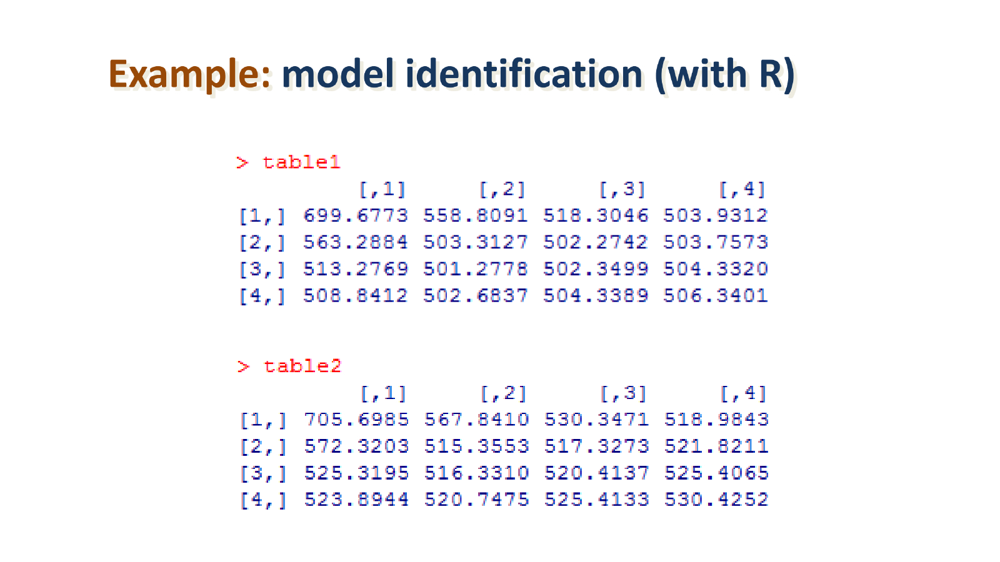
ตารางให้ผลต่างกันตามค่าปรับ36
| อันดับ | AIC ต่ำสุด | BIC ต่ำสุด |
|---|---|---|
| 1 | ARMA(2,1) 501.28 (แถว 3 คอลัมน์ 2) | ARMA(1,1) 515.36 |
| 2 | ARMA(1,2) 502.27 | ARMA(2,1) 516.33 |
| 3 | ARMA(2,2) 502.35 | ARMA(1,2) 517.33 |
BIC เลือก ARMA(1,1) ที่ AIC ไม่เลือก เพราะค่าปรับหนักกว่า และคอลัมน์แรก (q = 0, AR ล้วน) AIC สูงทุกแถว เช่น AR(1) 563.29 แปลว่าข้อมูลต้องมีส่วน MA candidate ทั้งสี่ตัวจะไปตรวจ diagnostic ต่อใน Lesson 8
table1 <- array(0, c(4,4)) # ตาราง 4×4 ไว้เก็บผล
for (i in 1:4) {
for (j in 1:4) {
aic <- AIC(arima(data, order=c(i-1,0,j-1), method="ML")) # p, q วิ่ง 0 ถึง 3
table1[i,j] <- aic
}
}
# BIC: AIC(arima(...), k = log(length(data))) ใส่ penalty log(n) แทน 2แถว i คือ p = i − 1 และคอลัมน์ j คือ q = j − 1 ช่อง [3,2] จึงเป็น ARMA(2,1)
| ขั้น (ขั้นที่ 1–3 ในสไลด์) | ทำอะไร | ระวัง |
|---|---|---|
| 1. วาดกราฟอนุกรม | ดู trend, seasonal, outlier, ความแกว่ง ถ้าต้องแปลงให้ลองหลายแบบ เลือกตัวที่ทำให้แกว่งคงที่ที่สุด | แปลงก่อน difference เสมอ |
| 2. ACF/PACF ของข้อมูลเดิม | ถ้า ACF ลดช้ามากให้ difference | อย่า difference เกิน (ตอน 3.1) |
| 3. ACF/PACF/EACF ของข้อมูลที่แปลงแล้ว | เทียบกับรูปแบบทฤษฎี p, q มักไม่เกิน 4 (ไม่นับ seasonal) ใช้ AIC/BIC ประกอบควบคู่กับกราฟ37 | n < 50 ระบุยาก เพราะเส้น \(2/\sqrt n\) กว้าง เช่น n = 36 ได้ ±0.33 |
สุดท้ายแทบไม่มีโมเดลเดียวที่ชัด ได้ candidate จำนวนน้อยไปทำ estimation, diagnostic และ forecast แล้วเทียบกับโมเดลประเภทอื่นเช่น ETS เพราะต้องการตัวที่ดีที่สุด38 การเทียบข้ามตระกูลนี้ใช้ accuracy บนข้อมูล test (Lesson 2, 10) ไม่ใช่ AIC

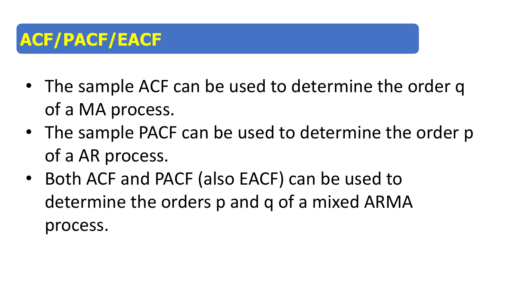
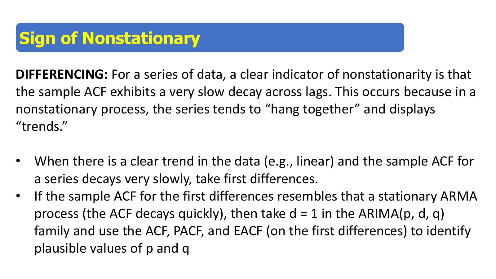
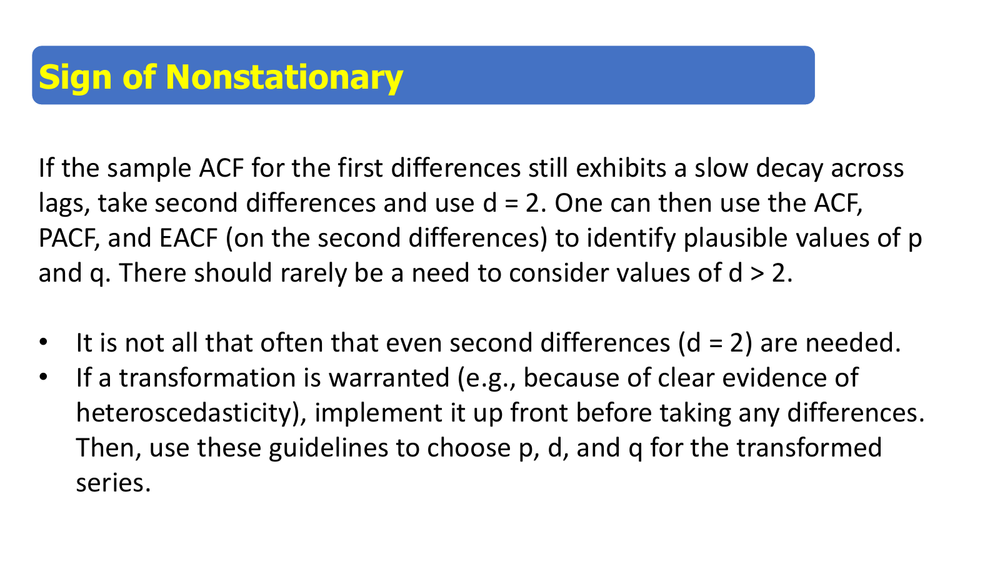

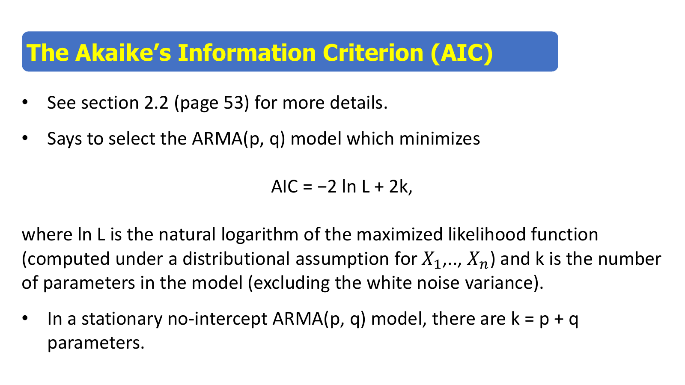
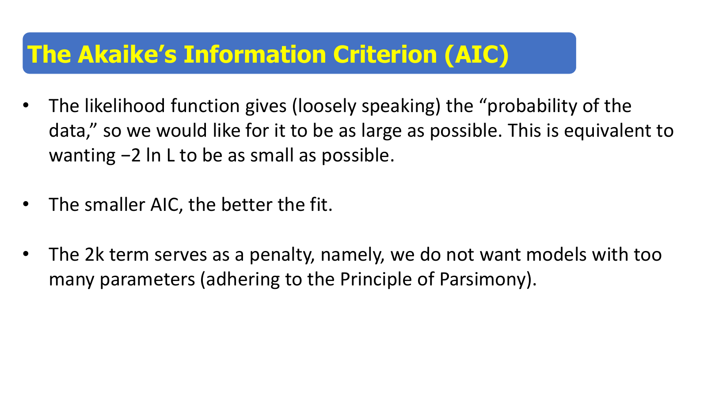
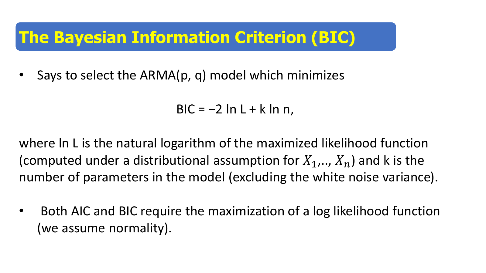

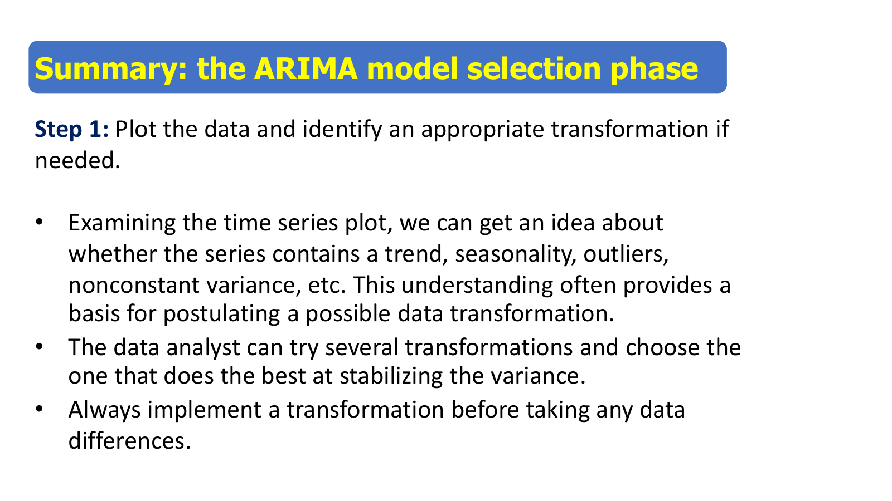
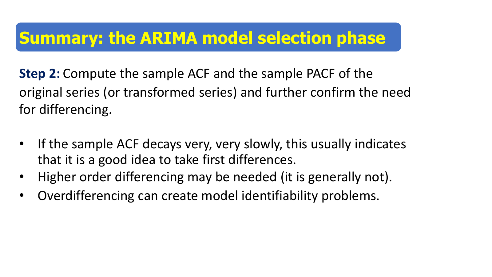


Class 7-2 อัดที่คณะ เขียนมือใต้กล้องตามใบงาน ARMA_properties ประเด็นคือ ARMA ที่เขียนได้ไม่ได้มีความหมายทุกตัว ใบงานตั้งสมมติฐานไว้สามข้อ: เราจะสมมติว่าไม่มีความซ้ำซ้อน เราจะสมมติว่าเป็น causal และ เราจะสมมติว่าเป็น invertible
เศษส่วน 6/9 กับ 2/3 คือจำนวนเดียวกัน ถ้าตัวเศษและตัวส่วนมีตัวประกอบร่วมก็ตัดได้ ARMA ก็เหมือนกัน ถ้าพหุนามฝั่ง AR กับฝั่ง MA มีตัวประกอบร่วม ตัดทิ้งแล้วจะได้โมเดลอันดับต่ำกว่า
ต้องตัดก่อนตรวจรากเสมอ ไม่อย่างนั้นจะนับอันดับผิด และตรวจรากของตัวประกอบที่ไม่มีอยู่จริง
\((1-0.5B)X_t=(1-0.5B)w_t\) ดูเหมือน ARMA(1,1) แต่ตัดแล้วเหลือ \(X_t=w_t\) คือ white noise เหมือน Example (b) ใน Lesson 6 ตอน 4.4
เราไม่เคยเห็น shock w ได้ตรง ๆ invertible แปลว่าย้อนคำนวณ shock ของวันนี้ได้จากข้อมูลในอดีต เหมือนถอดรหัสได้ ถ้าถอดไม่ได้ ก็หา residual และพยากรณ์ไม่ได้
causality ตรวจด้วยหลักการเดียวกับ invertibility แต่ตรวจคนละฟังก์ชัน39 ลองเขียน MA(1) ให้เป็น AR(∞) เพื่อดูว่าเงื่อนไขมาจากไหน
\(X_t=w_t-\theta w_{t-1}\) ซึ่งเป็นอันเดียวกับแบบบวก40
\(w_t=X_t+\theta w_{t-1}\) และ \(w_{t-1}=X_{t-1}+\theta w_{t-2}\) แทนไปเรื่อย ๆ ได้ \(w_t=X_t+\theta X_{t-1}+\theta^2X_{t-2}+\theta^3X_{t-3}+\dots\)
\(X_t=-\theta X_{t-1}-\theta^2X_{t-2}-\dots+w_t\) คล้าย AR ที่ยาวไม่สิ้นสุด
อนุกรม \(\theta^j\) ลู่เข้าก็ต่อเมื่อ |θ| < 1 ถ้า θ = 5 น้ำหนัก 5, 25, 125 ของอดีตโตขึ้นเรื่อย ๆ ซึ่งไม่มีความหมาย
คำถามที่อาจารย์ทิ้งไว้ทุกรุ่นคือ ทำไมต้องแปลง MA(q) เป็น AR(∞) ในเมื่อ MA(q) ก็มีแค่ q พารามิเตอร์อยู่แล้ว42 คำตอบมีสามข้อ
| เหตุผล | อธิบาย | เชื่อมกับ |
|---|---|---|
| identifiability | θ กับ 1/θ ให้ ACF เท่ากัน ข้อมูลแยกไม่ออก ต้องมีกฎเลือกตัวเดียว | Lesson 5 ตอน 3.4, MOM ของ MA(1) ตอน 5.4 |
| คำนวณ w ได้ | ถ้า invertible จะหา \(w_t\) จาก X ในอดีตได้ จึงได้ residual, likelihood และค่าพยากรณ์ | MLE ตอน 5.5, diagnostic Lesson 8 |
| ซอฟต์แวร์บังคับ | R บังคับให้ θ̂ อยู่ในบริเวณ invertible | output ตอน 5.6 |
ทฤษฎีบทที่ต้องจดและใช้ได้กับทุก MA43 รากติดลบดูค่าสัมบูรณ์ รากเชิงซ้อนดู modulus แต่ "ส่วนใหญ่จะเป็นจำนวนจริง"44 ถ้ามีรากตัวใดตัวหนึ่งน้อยกว่า 1 ถือว่าไม่ invertible เลย45
| causal | invertible | |
|---|---|---|
| ตรวจพหุนามไหน | Φ (ฝั่ง AR) | θ (ฝั่ง MA) |
| แปลว่า | เขียน X ด้วย w ปัจจุบันและอดีตได้ เป็น MA(∞) | เขียน w ด้วย X ปัจจุบันและอดีตได้ เป็น AR(∞) |
| ผ่านเสมอเมื่อ | เป็น MA ล้วน (ไม่มี Φ ให้ตรวจ) | เป็น AR ล้วน (ไม่มี θ ให้ตรวจ) |
| เชื่อมกับ | เงื่อนไขเดียวกับความนิ่งของ AR ใน Lesson 5 ตอน 4.5 และสามเหลี่ยม AR(2) ใน Lesson 6 ตอน 1.4 | การเลือก θ̂ จาก MOM (ตอน 5.4) |
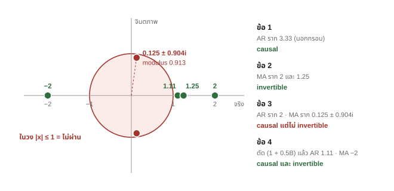
วงกลมแดงคือบริเวณที่ไม่ผ่าน รากทุกตัวของโจทย์สี่ข้อในตอน 4.4 อยู่นอกวง ยกเว้นคู่รากเชิงซ้อนของข้อ 3 ฝั่ง MA ซึ่ง modulus 0.913 จึงอยู่ในวง ข้อ 3 จึงไม่ invertible แม้ส่วนจริงจะเล็กเพียง 0.125
ทฤษฎีบทใช้กับพหุนามที่จัดรูป \(\Phi(B)X_t=\theta(B)w_t\) แล้ว ฝั่ง AR ย้าย X ไปซ้ายจึงเปลี่ยนเครื่องหมาย ฝั่ง MA คงเครื่องหมายเดิม ถ้าลืมเปลี่ยนเครื่องหมายฝั่ง AR รากจะผิดทั้งข้อ
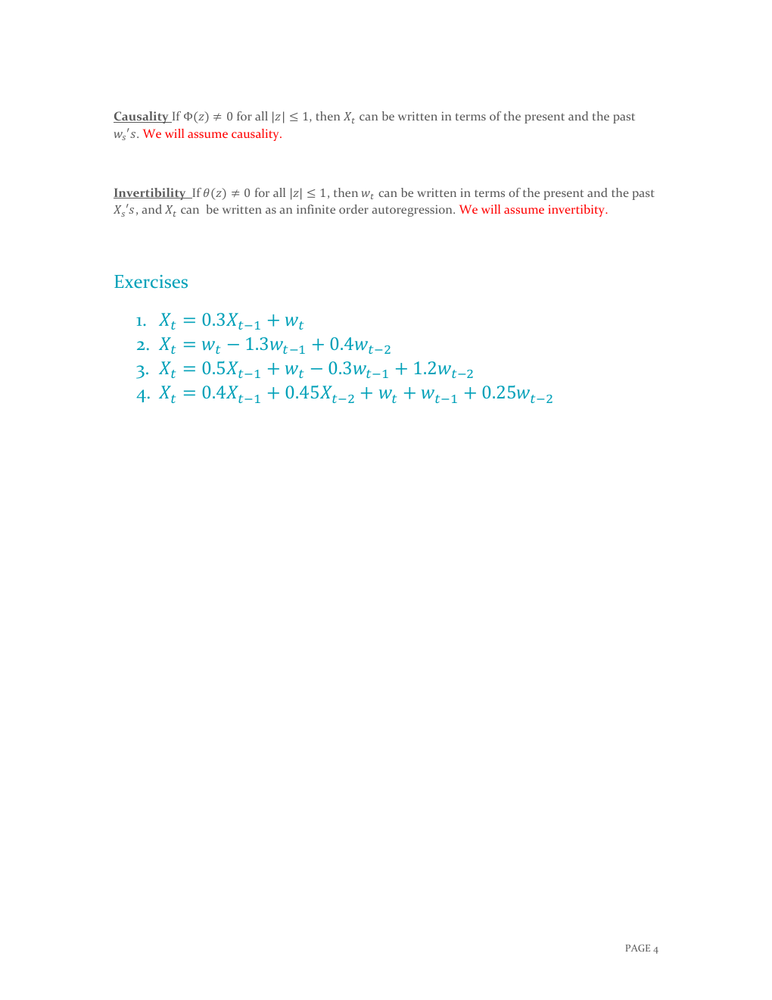
โจทย์สี่ข้อนี้เป็นรูปแบบที่ออกสอบได้ และเฉลยในห้องทุกข้อ46 ขั้นตอนของทุกข้อเหมือนกัน: จัดรูปเป็น \(\Phi(B)X_t=\theta(B)w_t\) เปลี่ยน B เป็น x ตั้งเท่ากับศูนย์ ระบุ a, b, c ให้ชัด ตรวจ \(b^2-4ac\) ก่อนแทนสูตร และตรวจฝั่งที่ง่ายก่อน
\((1-0.3B)X_t=w_t\) ต้องจัดรูปเพราะพหุนามนี้คือ characteristic function47 \(1-0.3x=0\) ได้ราก 3.33 > 1 จึง causal ไม่มีส่วน MA จึง invertible
\(\theta(x)=1-1.3x+0.4x^2\) a = 0.4, b = −1.3, c = 1 \(b^2-4ac=1.69-1.6=0.09>0\) รากจริง \(x=\dfrac{1.3\pm0.3}{0.8}\) ได้ 2 และ 1.25 เกิน 1 ทั้งคู่จึง invertible และเป็น MA จึง causal48
\((1-0.5B)X_t=(1-0.3B+1.2B^2)w_t\) ตรวจฝั่งซ้ายก่อนเพราะง่าย ราก 2 > 1 จึง causal ฝั่งขวา a = 1.2, b = −0.3, c = 1 \(D=0.09-4.8=-4.71<0\) รากเชิงซ้อน \(\dfrac{0.3\pm i\sqrt{4.71}}{2.4}=0.125\pm0.904i\) modulus \(\sqrt{0.125^2+0.904^2}=0.913<1\) จึงไม่ invertible49
ดูคล้าย ARMA(2,2) \((1-0.4B-0.45B^2)X_t=(1+B+0.25B^2)w_t\) แยกตัวประกอบได้ \((1+0.5B)(1-0.9B)X_t=(1+0.5B)^2w_t\) มีตัวประกอบร่วมจึงตัดทิ้ง เหลือ \((1-0.9B)X_t=(1+0.5B)w_t\) ซึ่งจริง ๆ คือ ARMA(1,1) เพราะ redundant50 ราก 1.11 > 1 จึง causal และราก −2 มีค่าสัมบูรณ์ 2 > 1 จึง invertible
\((1-0.8B)X_t=(1+1.25B)w_t\) ราก AR = 1.25 > 1 จึง causal ราก MA = −0.8 มีค่าสัมบูรณ์ 0.8 < 1 จึงไม่ invertible (θ = 1.25 เกิน 1 ก็เห็นได้ทันที)
causal ให้ ψ และ invertible ให้ π ซึ่งแค่สลับเศษส่วนกัน53 ถ้าหารพหุนามตรง ๆ จะติดอยู่ที่เศษส่วน54 ต้องใช้อนุกรมเรขาคณิต \((1-az)^{-1}=1+az+a^2z^2+\dots\) เมื่อ |az| < 1
\(\psi(z)=(1+0.5z)(1-0.9z)^{-1}=(1+0.5z)(1+0.9z+0.81z^2+0.729z^3+\dots)\)
\(z^1\): 0.9 + 0.5 = 1.4; \(z^2\): 0.81 + 0.45 = 1.26 = 1.4(0.9); \(z^3\): 0.729 + 0.405 = 1.134 = 1.4(0.9)²
\(X_t=(1+1.4B+1.4(0.9)B^2+1.4(0.9)^2B^3+\dots)w_t\) ถ้าเขียนในข้อสอบแค่นี้ได้เต็ม เพราะหาแบบแผนเจอแล้ว55 แบบหนังสือ "ให้ดูเป็น professional" คือ \(X_t=w_t+\sum_{j=1}^\infty1.4(0.9)^{j-1}w_{t-j}\)
ARMAtoMA(ar = 0.9, ma = 0.5, lag.max = 5) ได้ 1.4, 1.26, 1.134, 1.0206, 0.9185 น้ำหนักเหล่านี้คือ ψ ที่ Lesson 8 ใช้คำนวณความกว้างของช่วงพยากรณ์\(\pi(z)=(1-0.9z)(1+0.5z)^{-1}=(1-0.9z)(1-0.5z+0.25z^2-0.125z^3+\dots)\)56
\(z^1\): −0.5 − 0.9 = −1.4; \(z^2\): 0.25 + 0.45 = 0.7 = −1.4(−0.5); \(z^3\): −0.125 − 0.225 = −0.35 = −1.4(−0.5)²
\(w_t=X_t-1.4X_{t-1}+0.7X_{t-2}-0.35X_{t-3}+\dots=X_t-1.4\sum_{j=1}^\infty(-0.5)^{j-1}X_{t-j}\)
วิธีอ่าน EACF อยู่ใน Lesson 6 ตอน 3.7: หามุมบนซ้ายของสามเหลี่ยม o มุมนั้นคือ (p, q) ในห้องไม่แน่ใจว่าอันไหนเป็นแถว58 แต่หัวตารางของ TSA เขียนชัดว่า AR/MA คือแถวเป็น p และคอลัมน์เป็น q ใบงานเพิ่มสองเรื่อง
| EACF ทฤษฎี | sample EACF จากข้อมูล | |
|---|---|---|
| รูปลิ่ม | มุมที่ (p, q) พอดี ขอบเอียงขยับขวาหนึ่งช่องต่อแถว เพราะใส่ AR เกินต้องใช้ MA ชดเชย | "may be completely ambiguous" โดยเฉพาะเมื่อ n น้อย |
| ตัวอย่างบนใบงาน | ARMA(1,1), (2,2), (3,3) มุมที่ (1,1), (2,2), (3,3) | ARMA(1,1) n = 200 เห็นมุม (1,1) ชัด ส่วน (2,2) และ (3,3) มี x กระจายจนหามุมไม่ได้ |
EACF ใช้ช่วยตั้ง candidate ได้ แต่ห้ามใช้ตัดสินคนเดียว ต้องใช้ร่วมกับ AIC/BIC และ diagnostic เสมอ
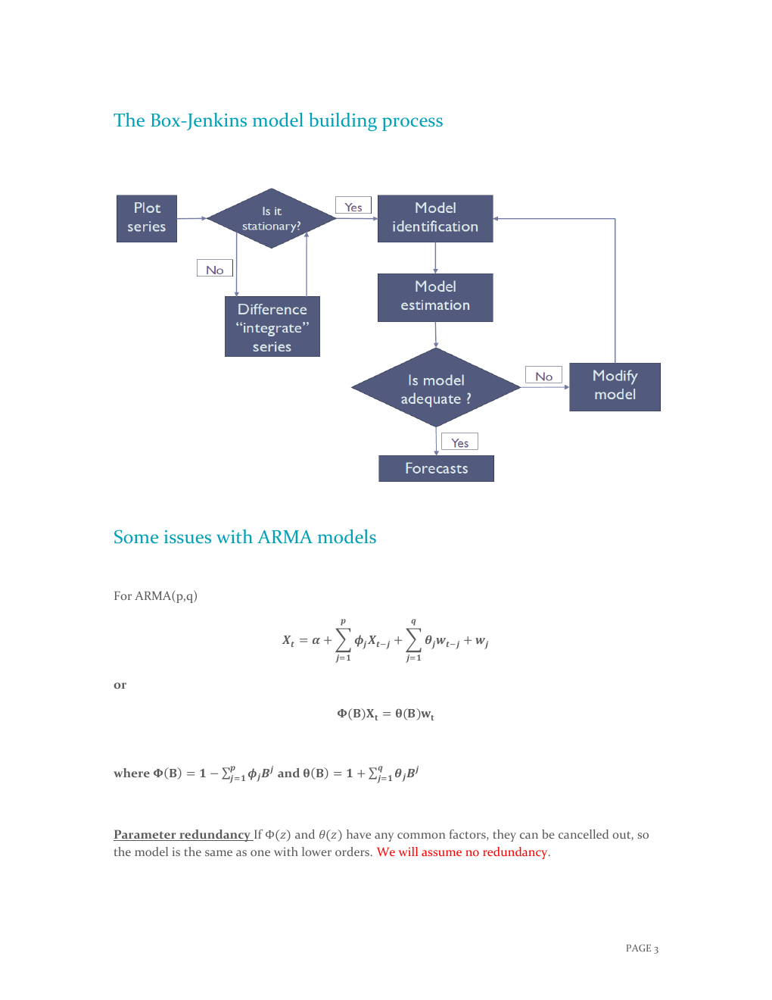


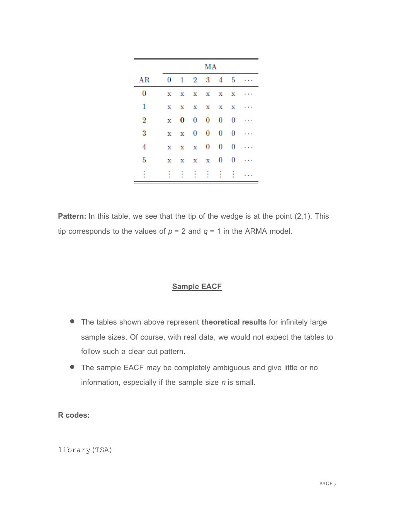

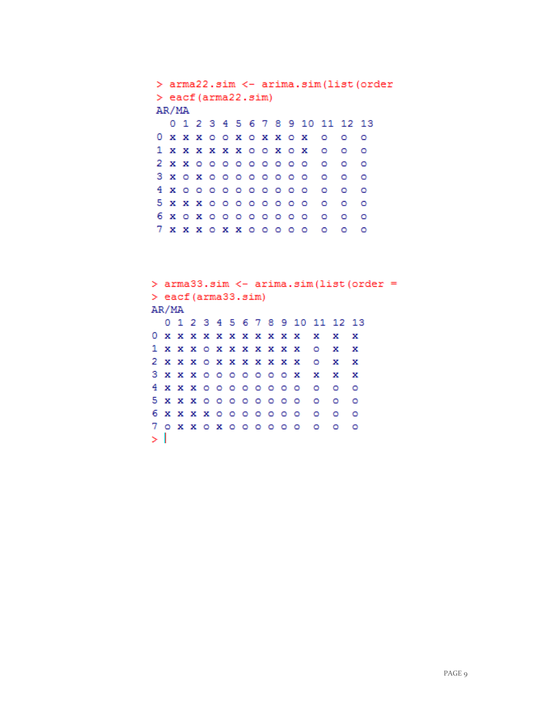
เนื้อหาส่วนนี้สอนต้นคาบ Class 8 สไลด์วางตำแหน่งของขั้นนี้ไว้ว่า วาดกราฟ แปลงให้ residual นิ่ง (ตัด trend/seasonal, difference, log หรือ √) แล้ว 3. ฟิตโมเดลกับ residual จากนั้นพยากรณ์และแปลงกลับ ส่วน model validation เป็นขั้นที่มนุษย์ยังต้องทำเอง59
estimation คือการ "เติม hat" ให้พารามิเตอร์ เช่น μ̂ = x̄60 ถ้าไม่ซับซ้อนก็ให้โปรแกรมประมาณให้ได้เลย61 แต่ข้อสอบเก่ามีการคำนวณมืออยู่บ้าง62
วิธีจากวิชา statistical inference มีสองแบบ63
| method of moments (MOM) | maximum likelihood (MLE) | |
|---|---|---|
| หลักการ | ตั้ง moment ของประชากรเท่ากับของตัวอย่าง เจอ γ แทนด้วย γ̂ เจอ ρ แทนด้วย ρ̂64 | หาค่าพารามิเตอร์ที่ทำให้ likelihood สูงสุด |
| คำนวณมือได้ไหม | ได้ เป็นวิธีเดียวที่สอนให้คำนวณ เพราะ MLE ต้องรู้ distribution65 | ไม่ได้ ใช้ Newton-Raphson ในคอมพิวเตอร์ |
| ชื่อใน R | Yule-Walker ar.yw() | arima() (ค่าเริ่มต้น) |
| ข้อเสีย | ARMA: ไม่มีประสิทธิภาพ ค่าประมาณแปรปรวนสูง | optimization ยาก ต้องมีจุดเริ่มที่ดี |
คำถามบนสไลด์ "Can you write down the likelihood" ชี้ว่า likelihood ของอนุกรมเวลาเขียนยาก เพราะค่าทุกตัวสัมพันธ์กัน คูณความน่าจะเป็นแบบข้อมูลอิสระไม่ได้ จึงนำไปสู่ ตัวประมาณแบบ method of moments ซึ่งเลือก φ ที่ทำให้ \(\gamma(h)=\hat\gamma(h)\) สำหรับ h = 0, …, p
มาจากสูตรของ AR(1) ใน Lesson 5: \(\gamma_1=\phi\gamma_0\) จึงได้ \(\phi=\rho_1\) และ \(\gamma_0=\sigma^2/(1-\phi^2)\) จึงได้ \(\sigma^2=\gamma_0(1-\phi^2)\) แล้วเติม hat ทุกตัว66
acf(data, type="covariance") ได้ \(\hat\gamma_0=6.0495\) และ \(\hat\gamma_1=-4.6641\)
\(\hat\phi=-4.6641/6.0495=-0.771\) และ \(\hat\sigma^2=6.0495(1-0.5944)=2.4534\)
ar.yw(data, order=1) ได้ ar = −0.7710 และ var.pred = 2.4866 ตรงกับที่อ่านในห้อง
สมการ Yule-Walker \(\gamma(h)=\phi_1\gamma(h-1)+\phi_2\gamma(h-2)\) คือสูตรเดียวกับที่ใช้หา ACF ของ AR(2) ใน Lesson 6 ตอน 2.1 แต่ใช้กลับทาง: รู้ ρ̂ แล้วแก้หา φ หารด้วย γ₀ แล้วแก้สองสมการสองตัวแปรก็ได้สูตรปิดข้างบน AR(p) ทั่วไปเขียนเป็นเมทริกซ์ \(\hat\phi=\hat\Gamma_p^{-1}\hat\gamma_p\) และ \(\hat\sigma^2=\hat\gamma(0)-\hat\gamma_p'\hat\Gamma_p^{-1}\hat\gamma_p\)
times มี ρ̂₁ = −0.771 และ ρ̂₂ = 0.3819 จึงได้ \(\hat\phi_2=(0.3819-0.5944)/0.4056=-0.524\) และ \(\hat\phi_1=-0.771(0.6181)/0.4056=-1.175\) ตรงกับ ar.yw(data, order.max=2, aic=FALSE) และ \(\hat\phi_2\) เท่ากับ PACF lag 2 พอดี เพราะ PACF lag h ก็คือสัมประสิทธิ์ตัวสุดท้ายของ AR(h) (Lesson 6 ตอน 3.3)
Yule-Walker เหมาะกับ AR(p) ส่วน MA(q) ใช้ innovations algorithm โดยแทน γ ด้วย γ̂ เช่นกัน สำหรับ ARMA(p,q) MOM ไม่มีประสิทธิภาพ จึงไม่ค่อยนิยม ในทางปฏิบัติใช้ MLE68 ข้อสอบเก่าเคยออก MOM ของ MA(1)69
\(\hat\rho_1=\dfrac{\hat\theta}{1+\hat\theta^2}\) ย้ายข้างแล้วเป็นพหุนามกำลังสอง70
\(\hat\rho_1\hat\theta^2-\hat\theta+\hat\rho_1=0\) จึงได้ \(\hat\theta=\dfrac{1\pm\sqrt{1-4\hat\rho_1^2}}{2\hat\rho_1}\)
\(\sqrt{1-0.64}=0.6\) ได้ \(\hat\theta=(1\pm0.6)/0.8\) คือ 2 หรือ 0.5 ผลคูณของสองรากเท่ากับ 1 เสมอ (คู่ θ กับ 1/θ ในตอน 4.2)
เลือก |θ̂| < 1 เพื่อให้ invertible คือ \(\hat\theta=\dfrac{1-\sqrt{1-4\hat\rho_1^2}}{2\hat\rho_1}=0.5\)
ข้อนี้รวมสามบทไว้ในโจทย์เดียว: สูตร ρ₁ ของ MA(1) จาก Lesson 5, การเลือกรากด้วย invertibility จากตอน 4 และขอบเขต |ρ₁| ≤ ½ ที่บอกว่าบางข้อมูลไม่มีคำตอบ ถ้าเจอ ρ̂₁ เกิน 0.5 ให้ตอบว่า MOM ใช้ไม่ได้ และข้อมูลไม่น่าจะเป็น MA(1)
likelihood คือโอกาสในการเกิดของโมเดล และ MLE คือค่าพารามิเตอร์ที่ทำให้โอกาสนั้นสูงสุด สิ่งที่ต้องจำคือกดให้โปรแกรมประมาณก็พอ71 ค่า L สูงสุดที่ได้ตรงนี้คือ L ตัวเดียวกับที่ใส่ใน AIC และ BIC ในตอน 3.3–3.4
| X | ข้อมูลทั้งชุด \((X_1,\dots,X_n)'\) จาก Gaussian ARMA ที่ mean เป็นศูนย์ |
| \(\Gamma_n\) | เมทริกซ์ covariance n × n ที่ขึ้นกับ φ, θ, σ² ต้อง invert ใหม่ทุกครั้งที่ลองค่าพารามิเตอร์ จึงต้องให้คอมพิวเตอร์ทำ |
| ข้อดีของ MLE | ข้อเสียของ MLE |
|---|---|
| ค่าประมาณแปรปรวนต่ำ (efficient) | optimization (Newton-Raphson หนังสือหน้า 124–128 เป็นส่วนเสริม) ยาก |
| สมมติฐาน Gaussian มักสมเหตุสมผล และแม้ไม่ใช่ Gaussian การแจกแจงเชิงเส้นกำกับก็เหมือนเดิม | ต้องเลือกจุดเริ่มที่ดี ซึ่งมักใช้ค่าจาก MOM |
สรุปของอาจารย์คือแนวคิดถูกต้อง แต่ optimization ลำบาก72
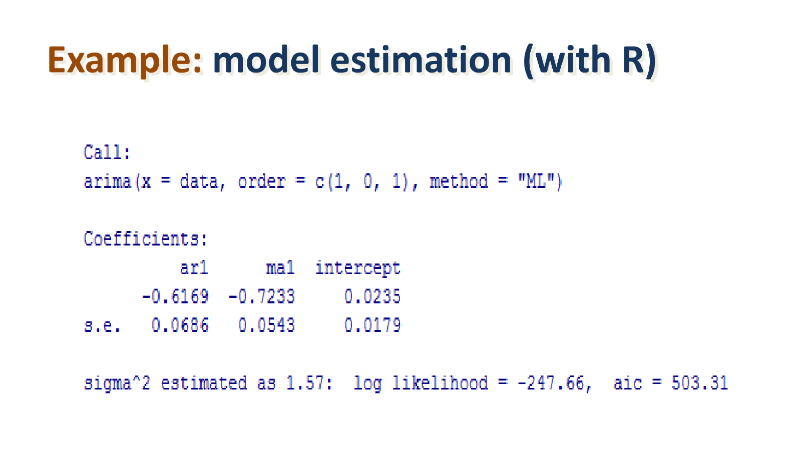
output ของ ARMA(1,1) กับ times ให้ ar1 = −0.6169, ma1 = −0.7233, intercept = 0.0235 และ σ² = 1.5773 ar1 คือ φ₁ ma1 คือ θ₁ (convention บวก) และ intercept คือ mean μ เพราะอนุกรมอาจไม่ได้แกว่งรอบศูนย์แต่เลื่อนขึ้นมา74 (method="ML" เป็นค่าเริ่มต้นอยู่แล้ว)
\((1+0.6169B)(X_t-0.0235)=(1-0.7233B)w_t\) โดย \(w_t\sim N(0,1.57)\) เขียนบรรทัดนี้บรรทัดเดียวในข้อสอบก็ได้เต็ม และทุกครั้งที่มี X_t ต้องลบ intercept แต่ w_t ไม่ต้อง75
ราก AR = −1/0.6169 มีค่าสัมบูรณ์ 1.62 > 1 และราก MA = 1/0.7233 = 1.38 > 1 ผ่านทั้งคู่
φ̂: −0.6169/0.0686 = −9.0 และ θ̂: −0.7233/0.0543 = −13.3 มีนัยสำคัญมาก intercept: 0.0235/0.0179 = 1.31 น้อยกว่า 2 จึงไม่ต่างจากศูนย์
MLE ของ AR(1) ได้ ar1 = −0.7795 (Yule-Walker −0.7710) และ aic = 563.29 ARMA(1,1) มี AIC ต่ำกว่าราว 60 หน่วย
ค่าแต่ละช่องใน output ใช้ต่อได้หลายทาง
| ค่าใน output | คิดต่อเป็นอะไรได้ | เรียนที่ |
|---|---|---|
| coef และ s.e. | t = coef/s.e. ถ้า |t| < 2 พารามิเตอร์นั้นไม่ต่างจากศูนย์ อาจตัดออก | บทนี้ |
| ar, ma | รากของ Φ และ θ ตรวจ causal/invertible และหา ψ weights | ตอน 4, Lesson 8 |
| log likelihood | AIC = −2 ln L + 2k และ BIC = −2 ln L + k ln n ย้อนกลับได้ทุกทาง | ตอน 3.3–3.4 |
| sigma^2 | ความกว้างของช่วงพยากรณ์ (ร่วมกับ ψ weights) | Lesson 8 |
\((1-0.4B)(1-B)X_t=w_t\) เมื่อ d ≥ 1 arima() ไม่ประมาณ intercept เพราะ difference ตัดค่าคงที่ทิ้งไปแล้ว (การเติม drift อยู่ใน Lesson 6 ตอน 4.3 และ Lesson 10)
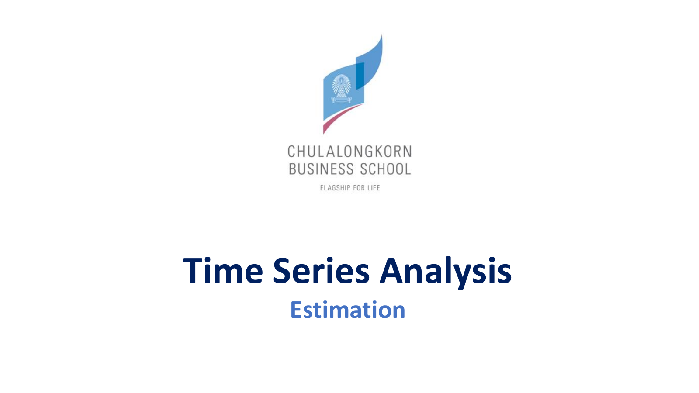


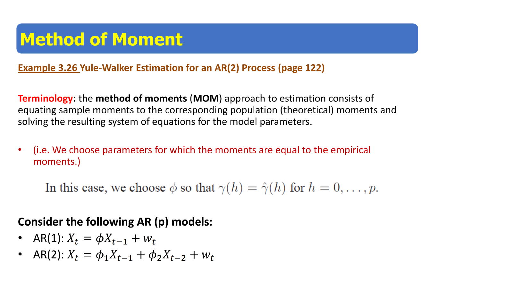

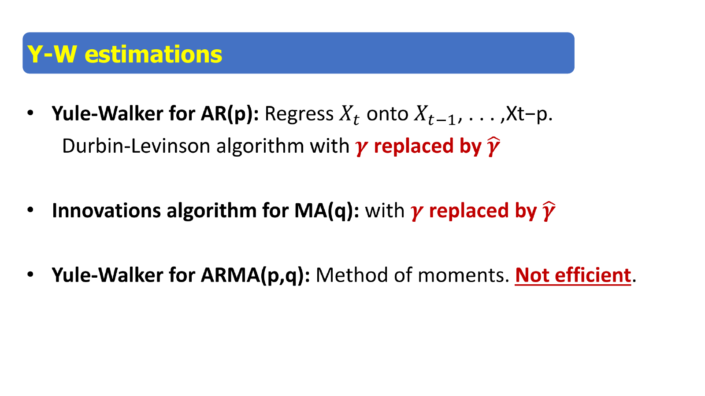


หน้าแบบฝึกมีควิซ 5 พร้อมเฉลย ลองฝึกต่อในแบบฝึก Lesson 7 หรืออ่านต่อ Lesson 8 — Diagnostic และการพยากรณ์
ตัวเลขยกในเนื้อหาชี้มาที่รายการนี้ แต่ละรายการระบุคลาสและนาทีของคลิป พร้อมถ้อยคำในคลิปเมื่อมี
| หน้า | เนื้อหา | อยู่ในตอน |
|---|---|---|
| 1–4 | ปก, ARIMA(0,1,1) กับ SES, double smoothing | ตอน 1 |
| 5–12 | Transformation, Box-Cox, electricity | ตอน 2 |
| 13–27 | Model identification, d, ADF, AIC, BIC, times.txt, สรุปขั้นตอนเลือกโมเดล | ตอน 3 |
| 28–39 | Estimation, MOM, Yule-Walker, MLE และ output ของ arima() | ตอน 5 |
| ใบงาน ARMA_properties หน้า | เนื้อหา | อยู่ในตอน |
|---|---|---|
| 1 | ปก Time Series Analysis 2603630 | etc — ปก |
| 2–3 | ทบทวน AR(1), นิยาม PACF, ตาราง ACF/PACF | ตอน 1 |
| 4–10 | Box-Jenkins process, redundancy, causality, invertibility, โจทย์สี่ข้อ, EACF ทฤษฎี, sample EACF และ R codes | ตอน 4 |
แหล่งอื่นที่ใช้: Class 7-1 ทั้งคลิป (0:00–0:47, ตอน 1–3), Class 7-2 ทั้งคลิป (0:00–1:02, ตอน 4), Class 8 ช่วง 0:00–0:26 (estimation) และ 1:07–1:08 (การเขียนโมเดลจาก output) (ตอน 5), ไฟล์ R_codes.txt, times.txt, quiz_5.pdf (CLASS 7), ARMA_properties.pdf และ EXERCISE.pdf (CLASS 6)